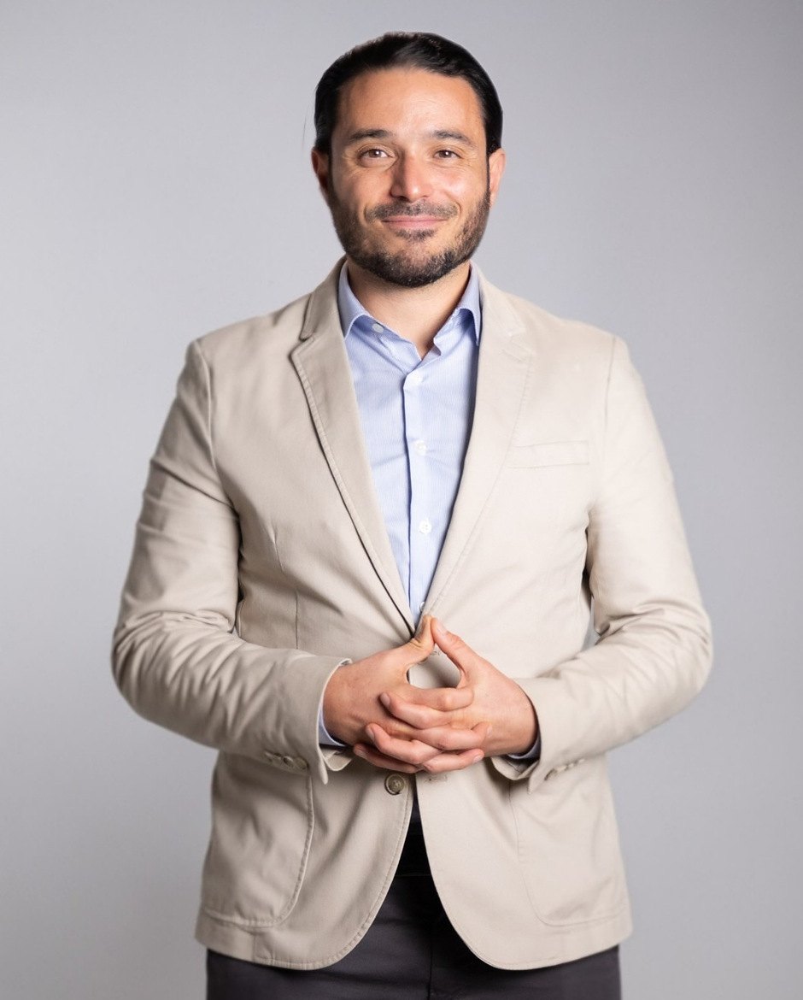

Programme d'accompagnement · Cohorte fondatrice 2026
Sortir du brouillard, reconstruire des limites qui tiennent, et retrouver une façon plus sûre de choisir tes relations. En collectif et en individuel, du 24 septembre au 10 décembre.
Sur sélection. Un entretien de vingt minutes précède toute réservation.
Pourquoi ce programme
De l'information, tu en as consommé beaucoup. Vidéos, articles, listes de signaux. Ce qui manque est ailleurs, et c'est exactement là que ces douze semaines travaillent.
La cohorte fondatrice en bref
Le tri, fait avant toi
Si la deuxième colonne te décrit aujourd'hui, l'entretien de sélection sert précisément à le dire et à t'orienter vers ce qui convient mieux. Ce n'est pas un refus, c'est un ordre de priorité.
Ce que tu reçois
Le collectif installe la compréhension et l'entraînement. L'individuel traduit tout ça dans ta situation réelle, et ouvre quand c'est utile un travail thérapeutique personnel. L'accompagnement individuel est compris dans le prix, il n'est pas vendu en supplément.
Le parcours
Chaque live collectif se termine par un outil que tu emportes. Rien n'est laissé à l'état de compréhension.
Phase 1 — Comprendre
Phase 2 — Sortir et sécuriser
Phase 3 — Reconstruire et choisir
La méthode
Cinq axes, réutilisés dans les onze séances suivantes. Ils permettent de lire une situation sans avoir à qualifier psychologiquement l'autre — donc sans dépendre d'une réponse qui ne viendra jamais.
Ce qui est observable, daté, vérifiable. Pas l'intention supposée.
Les règles qui s'appliquent à toi et pas à l'autre.
L'effet cumulé, mesurable, sur ton sommeil, ton corps, tes relations.
Depuis combien de temps, à quelle fréquence, selon quel rythme.
La question qui décide de tout : peux-tu poser une limite sans payer un prix ?
On ne répare pas un jugement abîmé en apprenant à qualifier l'autre. On le répare en réapprenant à lire les faits.
Le cadre
Le prix
12 000 MAD TTCLe parcours complet, trois mois. Prix ferme et définitif.
Le prix comprend l'ensemble des séances collectives et individuelles, les supports, les livrables et le certificat. Aucune somme ne peut s'y ajouter après la conclusion du contrat.
Comment on entre
« Est-ce de l'amour ou de l'emprise ? », le dimanche 13 septembre à 19 h, heure de Casablanca. Soixante minutes, en direct. Gratuit, sans obligation d'achat — tu es libre de repartir avec les outils de la séance et rien d'autre. Réserver ma place au webinaire →
Le formulaire ci-dessous : ta situation, ton objectif, ta disponibilité. Court, et lu par moi.
Il vérifie l'adéquation et la sécurité. Il peut déboucher sur une orientation plutôt que sur une place — c'est son rôle.
L'acompte confirme ta place. La charte d'engagement et les conditions générales sont signées avant le premier live.

Qui anime
Thérapeute, spécialisé dans les mécaniques relationnelles systémiques · Hypnothérapeute ARCHE · Coach certifié ICF
Je reçois en cabinet à Casablanca et à distance. Mon travail porte sur ce qui se joue entre les personnes plutôt que dans une seule d'entre elles : ce qu'un couple, une famille ou une équipe finit par installer sans jamais l'avoir décidé, et ce qu'il faut déplacer pour que ça cède. C'est un travail thérapeutique sur la relation, distinct du soin médical et psychiatrique — et quand une situation relève de celui-ci, je le dis et j'oriente.
Ingénieur de formation, j'ai passé dix-huit ans à piloter des projets complexes et à arbitrer des tensions entre parties aux intérêts opposés, en France, au Maroc et en Arabie saoudite. Je me suis ensuite formé à l'accompagnement individuel : hypnothérapie à l'ARCHE, constellations systémiques auprès de Menchu Mendoza, facilitation d'ateliers expérientiels.
Hors Emprise est né d'une question entendue sur plusieurs continents, toujours dans les mêmes termes : « comment savoir si c'est un pervers narcissique ? » J'ai passé deux ans à confronter ce que dit réellement la recherche sur l'emprise à ce que je voyais arriver en consultation. Ce programme est ce qui en est sorti.
Douze places pour la cohorte fondatrice, du 24 septembre au 10 décembre. Je lis chaque candidature et je réponds à toutes, y compris quand la réponse est « pas maintenant ».
En cas de danger immédiat, Hors Emprise n'est pas la bonne porte. Ce programme n'est pas un service d'urgence. Au Maroc, la ligne 8350 assure écoute et orientation 24 h/24 pour les femmes victimes de violence. Ailleurs, contacte les services d'urgence de ton pays.